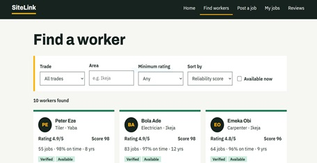
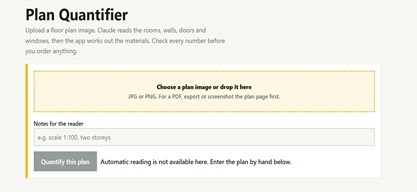
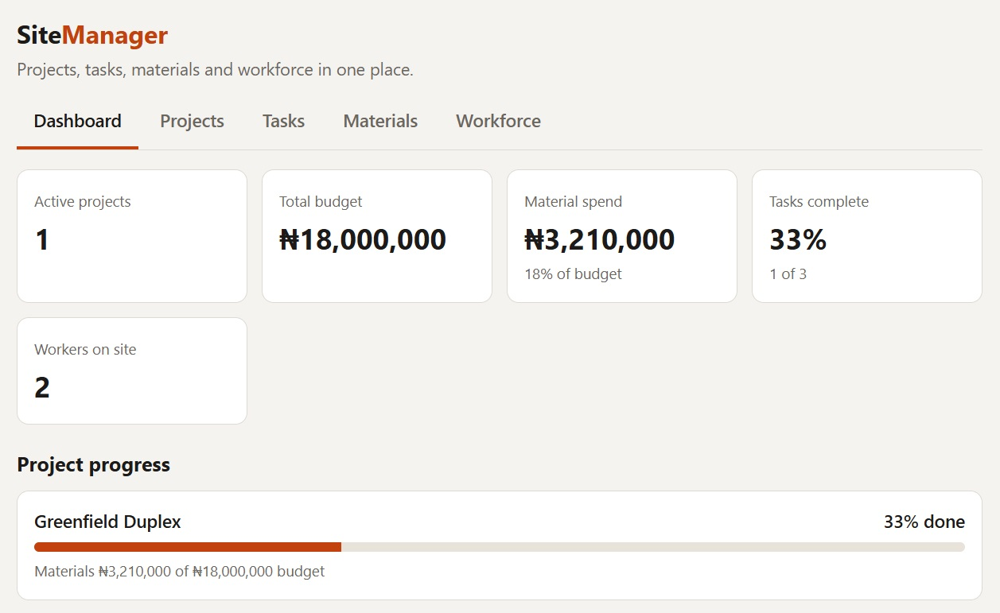

Sitelink+
Find verified carpenters, electricians, masons, plumbers and more. SiteLink records who turned up, what was done, and how well it was done. Hire construction workers you can trust.
Built with: HTML, CSS, JavaScript
Three projects that combine my engineering and software interests.

Find verified carpenters, electricians, masons, plumbers and more. SiteLink records who turned up, what was done, and how well it was done. Hire construction workers you can trust.
Built with: HTML, CSS, JavaScript

Upload a floor plan image. Claude reads the rooms, walls, doors and windows, then the app works out the materials. Check every number before you order anything.
Built with: HTML, JavaScript

Projects, tasks, materials and workforce in one place.
Built with: HTML, JavaScript